My sweet dream came right after I slaughtered that mosquito.
I set my alarm to wake me up at 7 o’clock but my body pulled my up at six.
I went to clean myself, brush my teeth and of course make my necessities.
In China most toilets are not toilets or so we call it traditional toilet.
We have to bend down instead of sitting.
Now this bathroom doesn’t have doors so if someone came in we can salute each other and the shit together.
I didn’t take out much stuff from my packs yesterday so I didn’t have to organize much this morning.
However I am carrying 5 packs of stuffs and since the trip just started,
every time I need something I have to go through each pack before I find it.
Well, if you are wondering, I did packed myself, but I am not familiar with where I put my stuffs.
I carried my bike and my luggage up three floors to the lobby.
Mario was sleeping in the counter since he covered the night shift.
I believe that Zhao sir drank too much yesterday and fell asleep on the lobby’s sofa.
I didn’t want to wake them up so I opened the door silently and put all the packs back to the bike.
The packs all together are very heavy. My LGS-GMT has to carry all that and me.
I feel compassion for it so every night when I find a place to stay I will take off all the packs and let my bike relax a little.
It doesn’t sound charming that each time I refer to my bike as LGS-GMT.
Since this bike will travel with my for half a year if I don’t give it a name I won’t feel good.
Therefore from now on my partner will be called Dido.
Please everyone reading remember from now on that my partner for the next six months, my bike, is Dido.
Mario and Zhao sir woke up right after I finished hanging all the packs on Dido.
I took out two water bottles and asked Mario to fill them up for my trip.
Mario only had hot water so he fills the bottles with hot water.
As we all know plastic bottles don’t react nicely to hot water.
My bottles went soft on me. Zhao sir asked me if I drink Tea.
He gave me some tea for one bottle and another one with water.
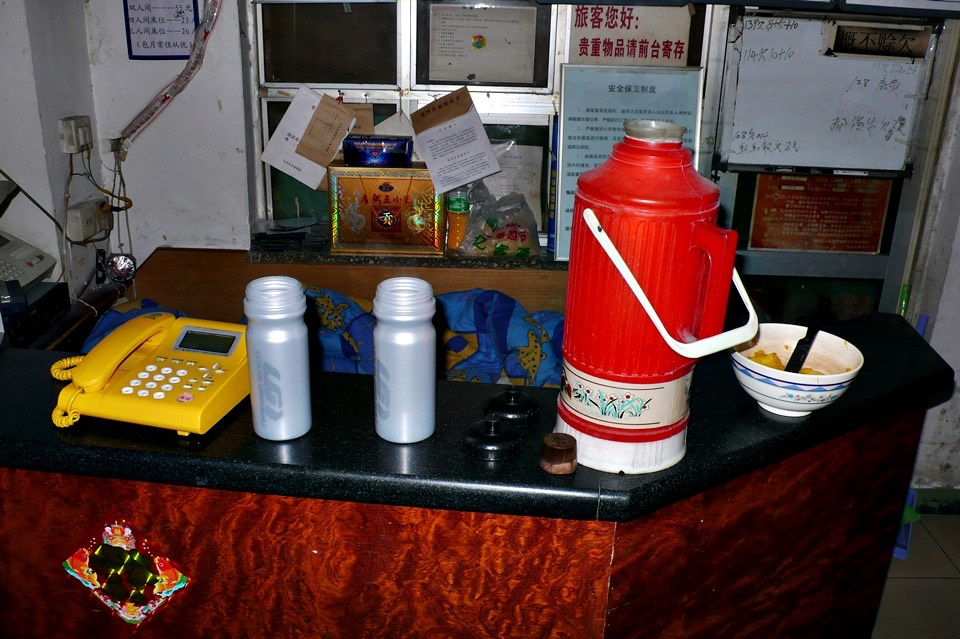
Zhao sir took care of me because I am four months younger than his son. He thought of me like a son.
I bought a instant noodle (2.5RMB), two small hot dogs (1RMB each) and a coke (3RMB) with 5 bucks of deposit for the hotel.
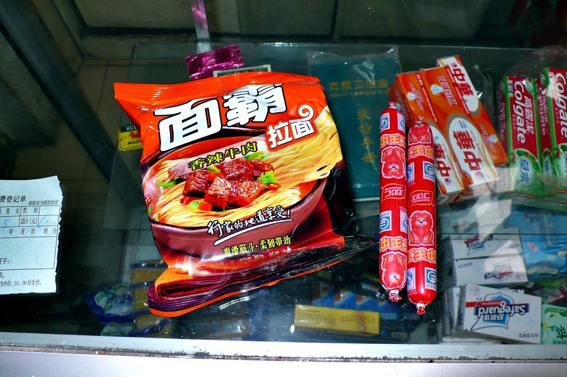
I used up the deposit and at the same time I got some changes with Mario.
Chinese RMB is very interesting, I received 97.5RMB in which the 100 RMB is paper bill, the 50, the 10 and 1 RMB are all paper bill,
even the 5 cents is also paper bill. Not a single coin. Mario gave me all 5 RMB bills so I can use it on my way without problem.
Yesterday night when I checked in I only know that this is a cheap place to stay, but I don’t even know where I am.
Therefore I took out my map and let Zhao sir to mark a circle to where I am at.
I departed from this circle at seven thirty and planned to get to Tian Tan (Temple of Heaven) at eight.
But Beijing is so big and its roads are so complicated. People gazed at me riding my bike with all my gears.
In Beijing there are automobile lanes and bicycle lanes. There are no motorcycle lanes.
I couldn’t see one single motorcycle on the street even its busy Monday morning.
It is so different than Taipei’s streets. I made an effort to figure out my exact position.
After taking a few wrong ways finally I got to Tian Tan without more incidents.
However I arrived 40 minutes later than announced.
I am so embarrassed to make the reporters wait on my first day departure.
A lot of elder peoples cheered me after the interview,
and then I officially initiated my bike journey from Tian Tan at around nine thirty.
After riding for a while, I remembered that I didn’t take any picture there for souvenir.
Well let it be, what is past has passed.
Today’s goal is Baoding. People told me that it’s easy to get there.
I just have to ride on a side way along the Jingshi Expressway.
From the map it also appeared very simple to get there.
However in reality is a totally different story.
While I was still in Beijing city I asked ten or more people how to get to Baoding.
Every time I encountered a diversion with 2 roads to chose I asked people and made sure that I am on the right way.
I even saw a traffic sign telling me that there’s 138Km left to Baoding.
Looked so simple, but I still got lost. I am definitely not a good navigator.
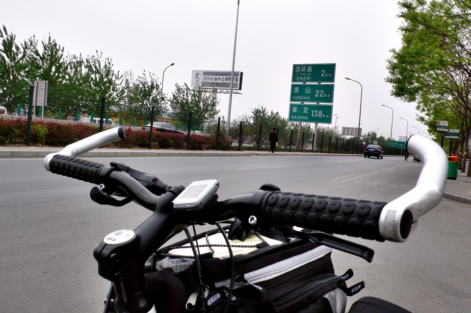
I ate the bread I got from airplane yesterday and swallowed it for breakfast.
I was still hungry. Around ten thirty I saw someone selling chow fan (stir rice).
It looked delicious, so I stopped and ordered for a service.
This chow fan was not cooked using propane gas it used coal.
You can say it’s barbequed. The owner is a woman with last name Zhao.
So I call her madam Zhao. She commanded her daughter to make a chow fan for me.
One serving of chow fan is only 3RMB! So cheap, this is the journey I was longing for!
A serving of chow fan was double of those I eat in Taiwan and it came with some spicy radish and soy bean.
It tasted super salty I had to take it down with water. I chatted with madam Zhao as I ate.
They are from Jiangsu. Since she had 3 daughters the third one who cooked for me is called Zhao the third.
After hearing this the seventeen years old lady Zhao was stomping her foot and said “Mom! Come on that’s not true.”
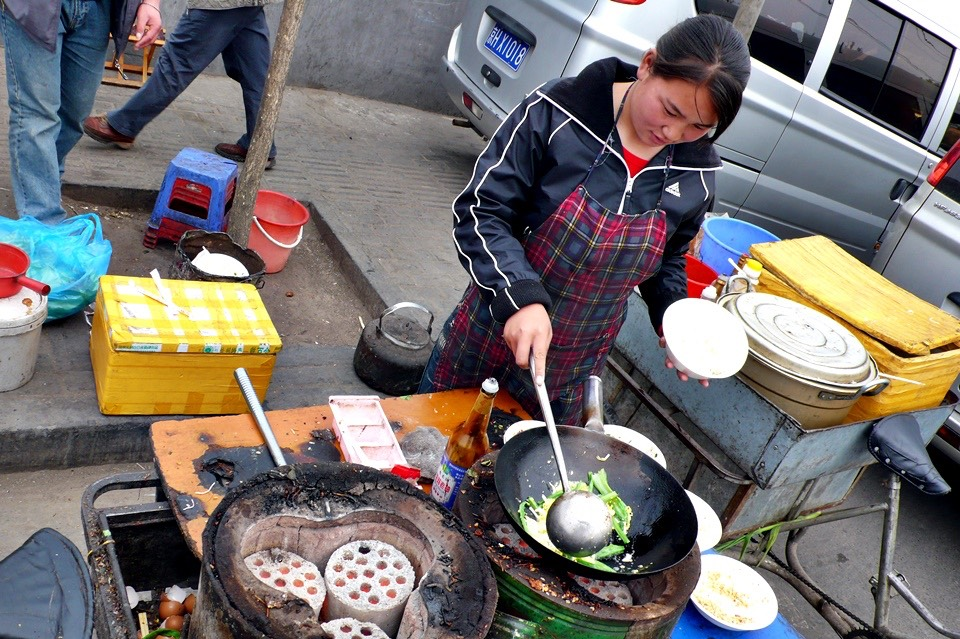
I was so full after taking down the chow fan with a keg of water.
This is was a good deal, it served as a brunch. I asked madam Zhao for water and she gladly consented.
In the morning when I get prepared and went to Tian Tan the sky was cloudy and now just after I eat the sun came out.
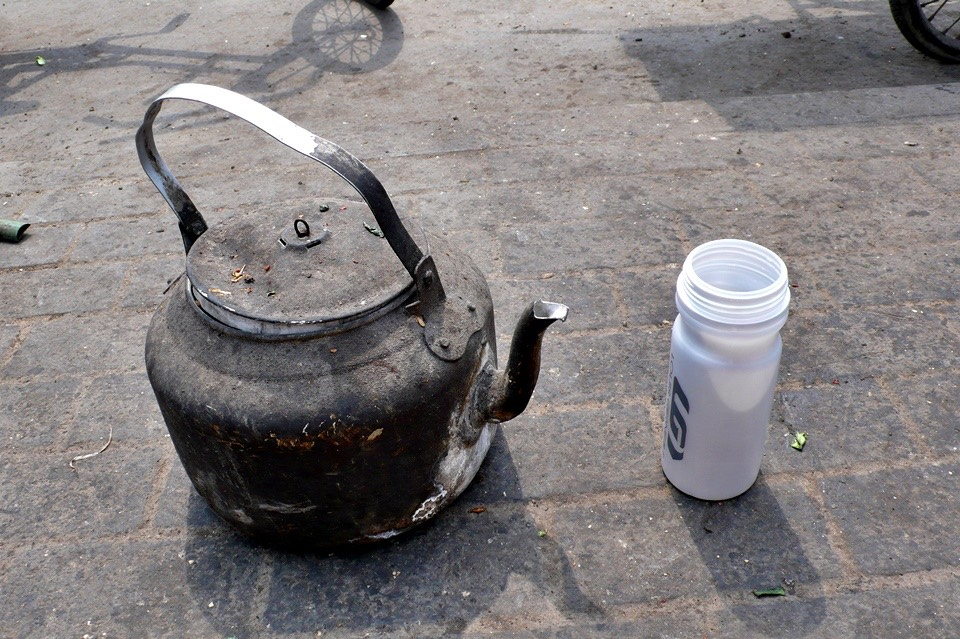
Stomach full and thirst quenched it’s time to get going.
Beijing is so huge by now I am still in Beijing.
I asked very seriously to police, the mister who was smoking, the guy tending the fruit stand, the woman selling pigeon egg,
everybody was so sure and told me that I was on the right way to Baoding. Then I just got lost.
Baoding is located right south of Beijing in theory I just have to go south.
But somehow I was going west and at some point I went north.
And Jingshi Expressway supposed to be a big, straight and long expressway but why I am always on small country road.
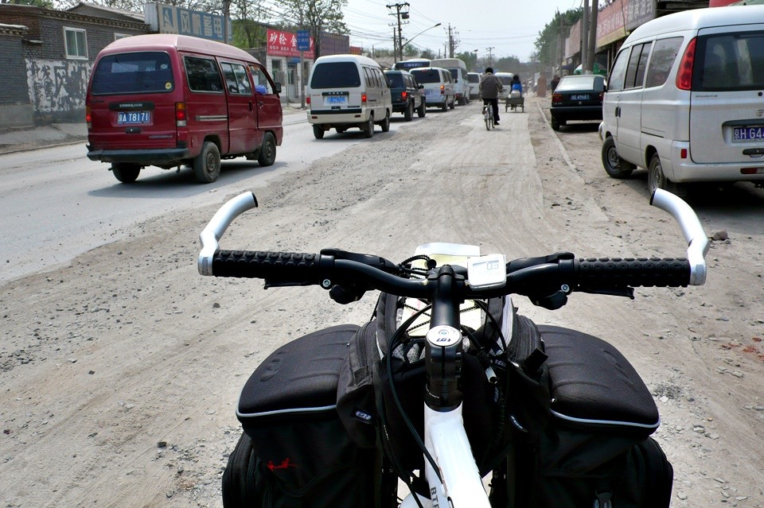
This country road was in very bad condition, but that not all.
Trucks loaded with coal passing constantly beside me.
What is going on? When the trucks approximated me within 50 meters they played the horn for three times.
I believe they think that I am deaf or maybe they wanted me deaf.
Every time a truck goes by me, it raised a cloud of coal dust.
Now I was certain that I was so lost.
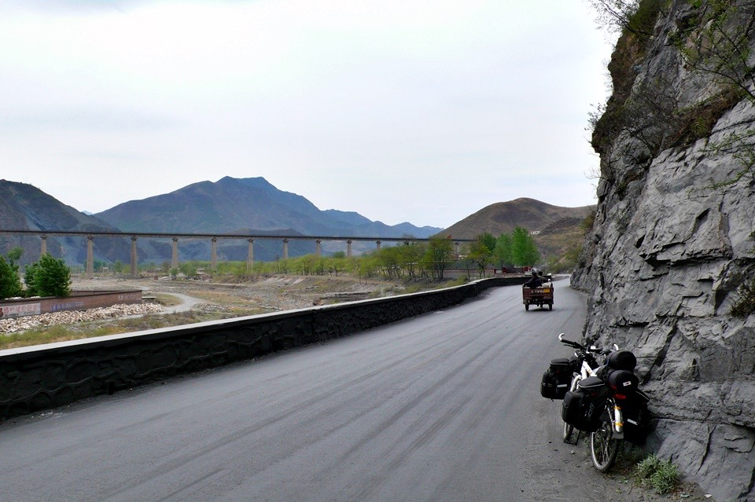
Even knowing for fact that I got lost, I kept going.
This mainly is because I don’t like to turn back.
I strongly believed that if I kept going I will be back at the right way.
So I rode for around 80Km in this coal dusted road.
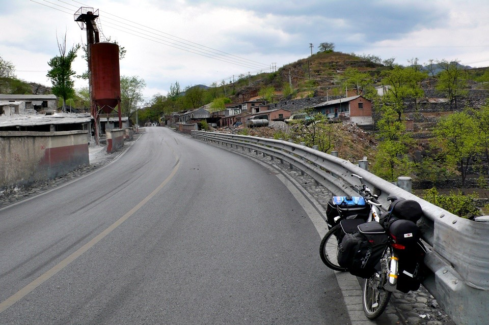
I couldn’t find any sign that I saw on the map I had.
Every time I asked someone if I was on the right track to Baoding,
the answer was head shakes and that I was going on the wrong and the long way.
They told me to head back to Beijing.
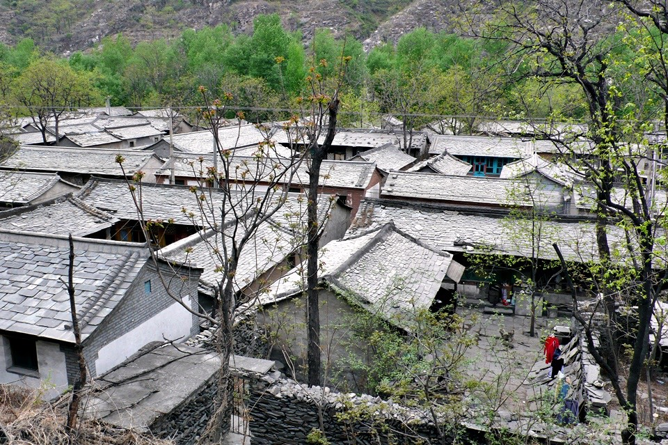
I just wouldn’t want to turn back.
I rode from eleven in the morning to three in the afternoon.
I finally decided that I was going on the wrong way when I saw a little dog sniffing the garbage beside a gentleman.
He told me that I was wrong.
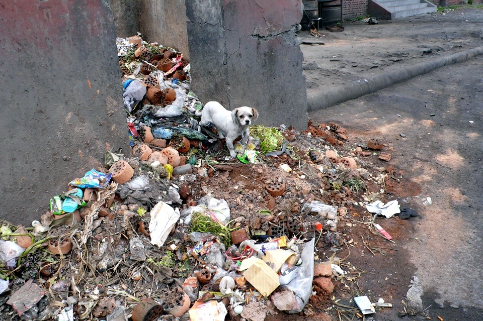
Hunger attacked me around three in the afternoon.
I took out the two hotdogs I bought from Mario’s together with a pack of cookies I bought in Taiwan.
Bikes don’t need fuel but the rider must feed himself in order to maintain the calories needed.
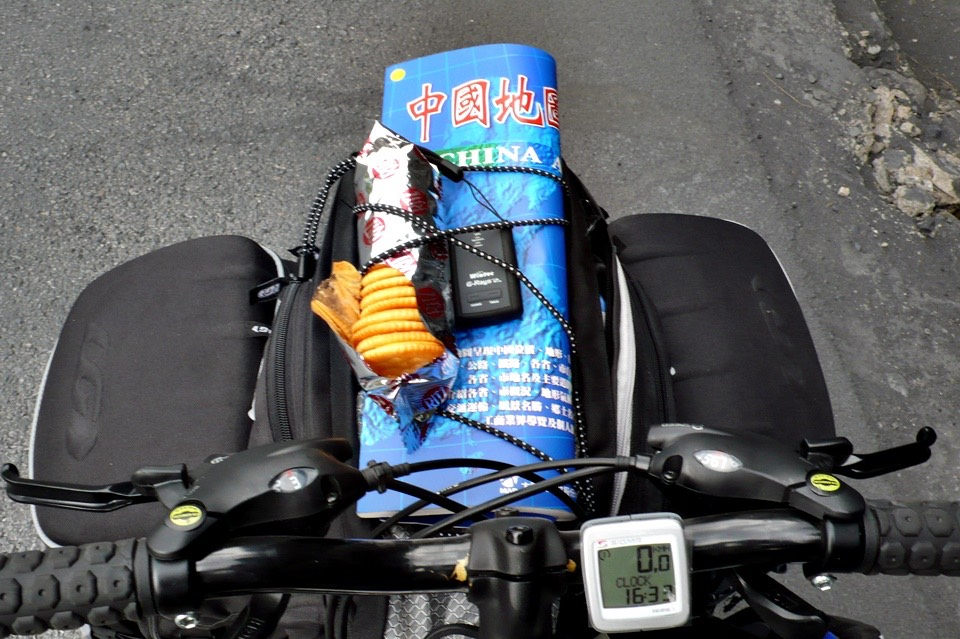
I was supposed to go south but I kept riding west.
Here I was in deep west region called Fangshan where coal was produced.
That’s why so many coal trucks passed by me playing their horn and raising coal dust.
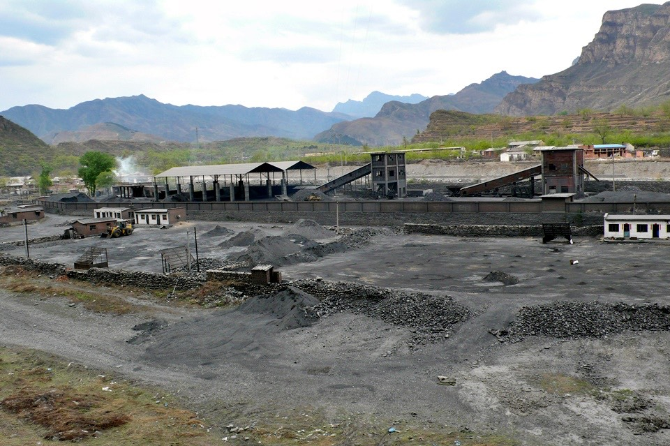
Coal dust was everywhere. With a broom you can literally collect a cart full of coal dust.
Since I was on the wrong way it is certain that I won’t get to Baoding today.
So I decided to ride till 5 o’clock and then look for a place to spend the night.
Around five thirty, I saw a flock of students.
Each of the Chinese kids have a reddish cheek. I really wanted to squeeze them.
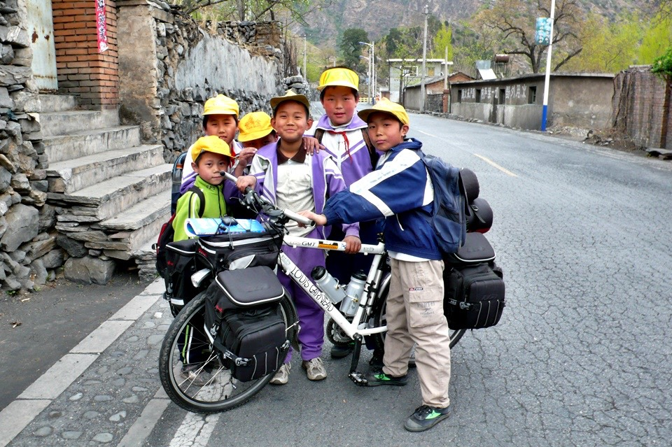
I took a picture of the kids in exchange of some information.
“Is there a place to stay on this road?”
The kids were studying at Xiapu Elementary.
Some of them answered me that 5 more kilometers from here and others said that 10 more.
So after discussing it they all agreed that it’s 7 more kilometers from where we were.
They were extremely interested in Dido so in appreciation of their information I answered their questions.
“What you carry in the bags?” “What is this and that?”
I waved my big hand and bade farewell.
I hoped to find a place to stay after 7 more kilometers.
The kids were quite accurate, at six thirty, when the day was still bright; I found a place “Fortune Hotel”.
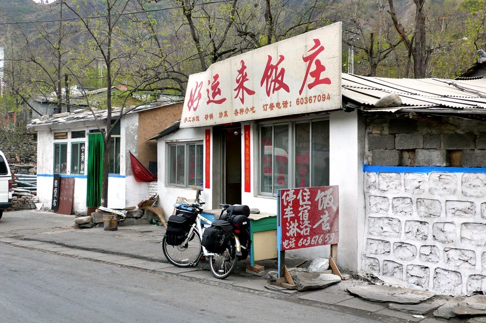
I asked: “How much is one night?”
“10RMB!” was the answer
Holy cow~ This is so cheap. I couldn’t believe that with 10RMB I can find a place to stay.
Yes but that wasn’t the hotel that was only the part of restaurant and groceries.
I had to walk a down hill to the house with flowers on the tree in the picture. That’s their home and hotel.
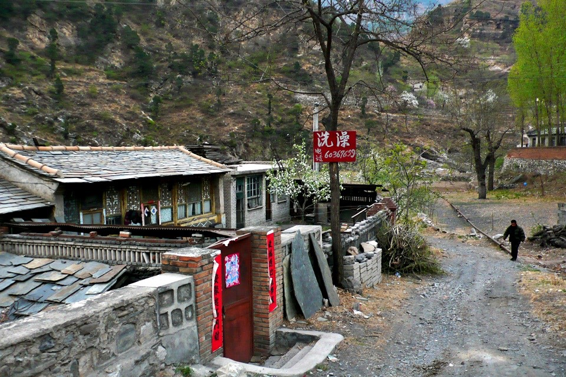
There’s one larger room with six beds for guests. The smaller room of about 6 m² was for the family.
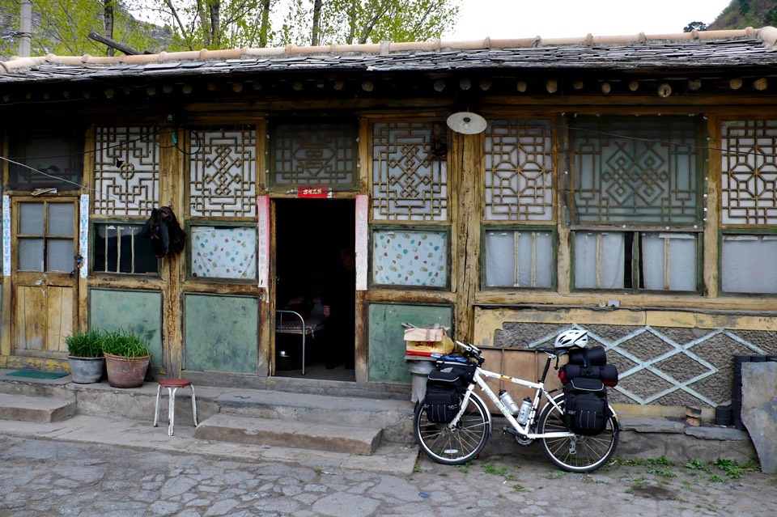
The grandmother of about 70 years old carried her heavy food steps and opened the door for me.
I put Dido in the room and discovered SHE’s (a famous pop group) poster on the wall.
I couldn’t figure out how old the posters were.
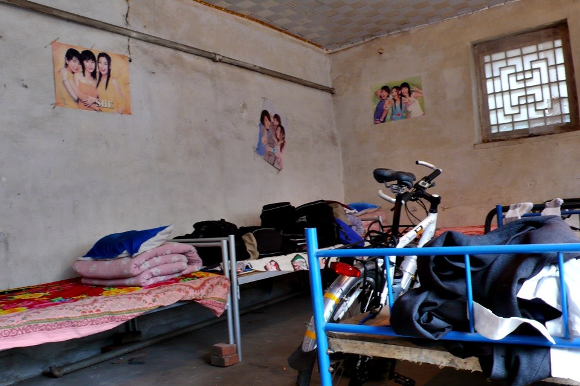
I asked the grandma if I can take a shower.
She told me that people around here only take bath once a week on Friday or Saturday.
Nobody take bath daily.
I bet Misasa wants to move over here so she doesn’t have to take bath every day.
Grandma gave me a bucket of water.
I used it to wash my dirty hands, filthy face full of coal dust and I wiped my body. That counts as a bath.
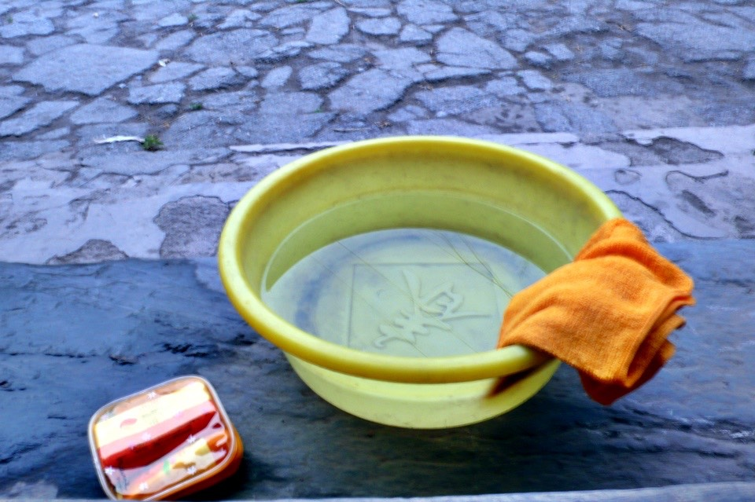
I took off Dido’s heavy load and went to the restaurant.
I asked the owner what they had in the menu.
She told me they had lamb, pork or vegetarian dumplings.
I ordered a quarter kilogram of pork dumplings.
It’s amazing that dumplings are not counted per quantity but per weight.
The family’s child ran before me while I waited for my dumplings.
He asked me:
“What are you doing?”
“I am writing my diary recording what happened today”
I answered finishing writing about a quarter kilogram of dumplings.
“Where you come from?” The kid kept inquiring.
“I came riding from Beijing from around right in the morning and I wanted to go to Baoding but I got lost so I ended up here.”
The kid went ballistic laughing.
It’s time I take some action, can’t always be questioned, I had to ask something.
So I asked “What is your name?”
The kid is Lesley Liu, he’s ten years old, the youngest of the family.
He didn’t study in the Xiapu Elementary as the kids I met before.
He studies in Centre Elementary in third grade.
“Where is your school?” I asked
“Xiaher.” He answered.
That is a very strange place for me. I never planned to come here.
Well but at least I know where I am and that’s enough.
My quarter kilogram of dumplings was served.
I counted 27 dumplings so. Half kilogram of dumplings cost 10RMB so I only have to pay 5RMB.
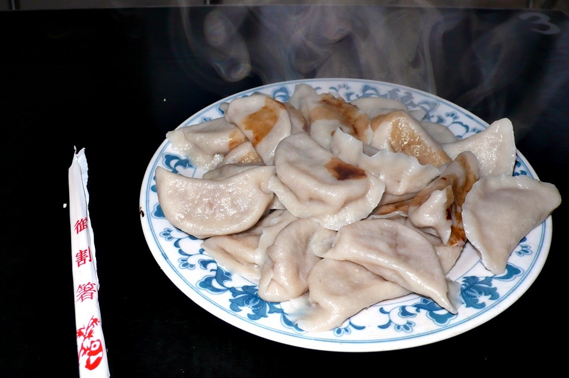
I thought for myself that if I knew that I was going to have a plate full of dumplings I would have saved the cookies for later.
Lesley really likes to perform so he first showed me the “fan dance”
then he demonstrated martial arts and told me to “bring it on!”. Are you serious, kid.
Saved by grandma! She demanded Lesley to let me eat.
So he went and fetched his treasure to show me.
It is a toy car but so torn up it didn’t have the outer body.
I felt pity for kids like him. They are so naive unlike Taiwanese kids
who carry a bunch of game cards with them and act like a spoiled prince.
I showed him Dido. He curiously touches every part and then pointed at the water bottle and asked me:
“What is that?”
It is water bottle my dear, a water bottle.
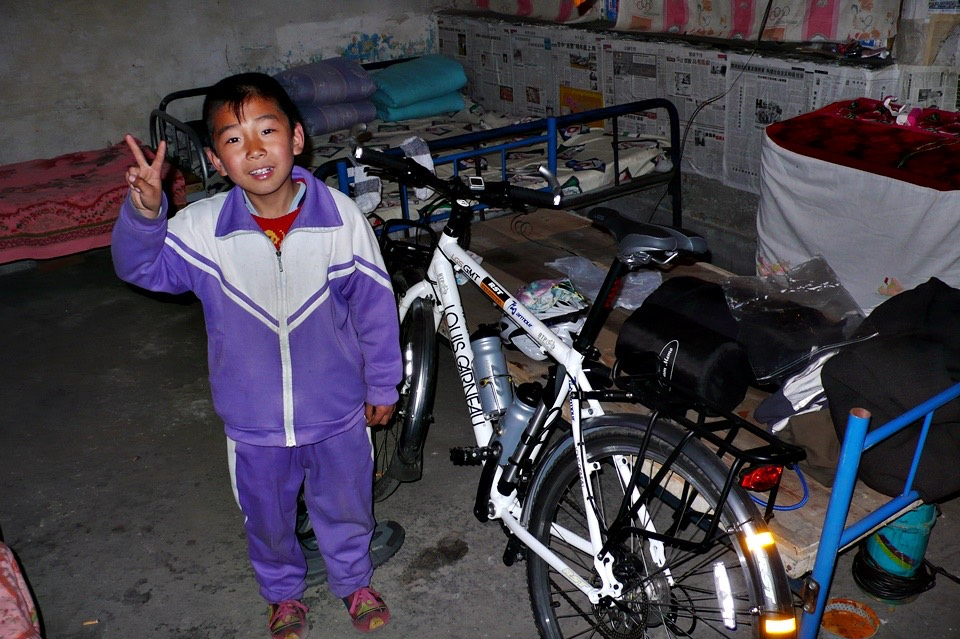
It was around seven thirty when I finished my dumplings and the day was already dark.
I could see that Lesley was happy to see me finish my last dumpling since grandma’s command of let me eat expired.
He followed me back to the house with intention to play with me.
I remembered that I still had a 5cents bill so I gave it to him discreetly and asked him:
“Don’t tell your mom I gave you this. You are a nice kid so keep this but let me get some rest Ok.”
Once I return to my room I started to organize today’s diary and pictures.
At the same time I listened Lesley chat with grandma. I am the only guest in the room that only had one yellowish light bulb.
Thankfully it had electric socket so I can recharge my camera and GPS for tomorrow’s journey.
I downloaded GPS’s data and used Google Earth to check how long I rode.
It was surprising how much lost I was. I rode for 120Km today and every single kilometer were to the west.
And carelessly I was riding towards the mountain.
Grandma told me that if I kept going I will start climbing and it will be gravel road very difficult to ride on.
I didn’t feel so bad; Xian after all is on the south west.
Even though I didn’t go south today I certain rode west for a good distance.
I like unpredictable journey. If I arrived Baoding today according to plan then I would feel a little tired.
Because that means I have to follow the plan and keep going to Shihjiazhuang or Stone Family Village.
That is not bad either, it’s just to “by the book” and lacked adventure feeling.
Chopper is a character from the Japanese anime “One Piece”.
He was a reindeer until he ate the “human fruit” which allowed him to speak, think, talk and changed into a human.
Me, I didn’t eat any fruit but I am always helplessly lost.
Thank you Dido for bearing the long lost ride today with me.
We will get to Xian no matter what and that’s all that matters.
It’s not a big deal getting lost and I like to randomly travel the road I like no matter what.